プロジェクト
SCR-PRJ-002·003·004 · 作成 · 設定 · 状態変更
プロジェクト作成
- 1.1基本情報
- 1.2保管ポリシー · 初期ロール · 作成
1.1基本情報
概要
ワークスペース内に新しいプロジェクトを作成する画面です。プロジェクトは必ず設定中の状態で作成され、構築を終えた後に段階的に運用中の状態へ移します。「*」が付いた3項目だけを入力すれば作成でき、残りの項目は作成後に設定画面で補えます。
画面説明
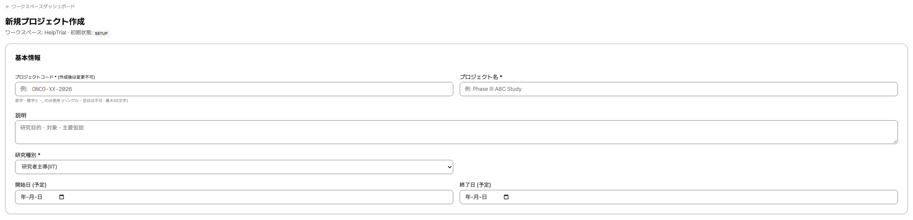
プロジェクトコード * (作成後は変更不可) — プロジェクトを区別する固有のコードです。ラベルに書かれているとおり、作成後は変更できません。
プロジェクト名 * — 画面や一覧に表示される名前です。同じワークスペースに同じ名前がすでにある場合は確認ダイアログが表示され、確認すると、そのまま作成されます。
説明 — 研究の目的・対象・主な仮説を入力します。任意項目です。
研究種別 * — 研究者主導(IIT) · 依頼者主導(IND) · 施設主導(SIT) · その他から選択します。初期値は研究者主導(IIT)です。
開始日 (予定) — 研究の開始予定日です。任意項目です。
終了日 (予定) — 開始日より前の日付を入力すると、入力欄の下に「終了日は開始日以降である必要があります」と表示され、作成がブロックされます。
← ワークスペースダッシュボード — 元の画面に戻ります。入力内容がある場合は、破棄するかどうかを先に確認します。
初期状態: SETUP — 作成結果が設定中の状態になることをあらかじめ案内します。状態を選ぶ項目はありません。
コード入力欄の下に「英数字と - _ のみ使用 (ハングル・空白不可 · 最大50文字)」と案内されます。ハングルや空白は入力した時点で削除され、英字は大文字に変換されます。
注意事項
必須確認 データ破損 · フォーム完了不可
- • プロジェクトコードは作成後、最後まで変更できません。プロトコル番号をそのまま使うのが一般的なので、承認済みのプロトコル番号を確認してから入力してください。
1.2保管ポリシー · 初期ロール · 作成
概要
基本情報の下には、保管ポリシーと初期ロールの案内が続きます。初期ロールは選択項目ではなく案内文です。標準ロールは、作成と同時にシステムが自動で作成します。
画面説明
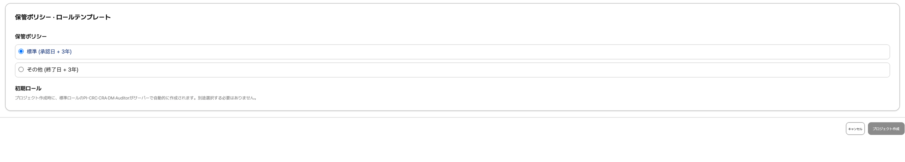
標準 (承認日 + 3年) — 初期値として選択されている保管ポリシーです。
その他 (終了日 + 3年) — 研究の終了日を基準に保管期間を計算します。
キャンセル — 作成を中止します。入力内容がある場合は、先に「変更内容の破棄」の確認ダイアログが表示されます。
プロジェクト作成 — 必須項目(プロジェクトコード · プロジェクト名 · 研究種別)がすべて入力されるまで無効のままです。作成が終わると、そのプロジェクトの設定画面にすぐ移動します 2.1。
初期ロール は入力項目ではありません — 「プロジェクト作成時に PI · CRC · CRA · DM · Auditor の標準ロールがサーバーで自動作成されます。別途選択する必要はありません。」と案内されます。
下部のアクションバーは、画面を下にスクロールしても下端に固定されて表示されます。
注意事項
必須確認 データ破損 · フォーム完了不可
- • ここで選んだ保管ポリシーは保存されません。現在の作成要求には保管ポリシーが含まれておらず、設定画面にも該当項目がありません。保管期限は設定画面の保管期限日に日付を直接入力してください 2.2。
プロジェクト設定
- 2.1画面構成
- 2.2メタ編集
2.1画面構成
概要
1つのプロジェクトについて、メタ情報・集計・状態・下位画面への入口を一か所にまとめた画面です。プロジェクトを作成した直後に最初に表示される画面で、運用中も設定に関わる作業はすべてここから始めます。
画面説明
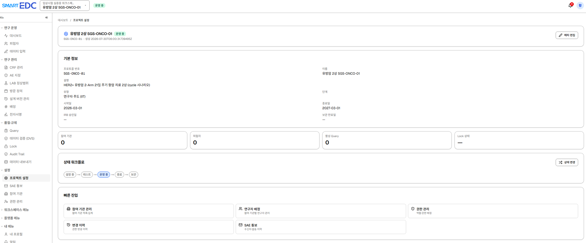
メタ編集 — 名前・説明・期間などを修正します 2.2。編集権限がない場合はこのボタンが表示されず、パスの横に読み取り専用のバッジが表示されます。
状態変更 — 状態移行の画面に移動します 3.1。
クイックアクセス — 参加施設管理 · 研究者割り当て · 権限管理 · 変更履歴 · SAE通知にすぐ移動できます。左のメニューにも同じ画面があります。
左のメニューの設定 > プロジェクト設定から、いつでもこの画面に戻れます。
パスはダッシュボード / プロジェクト設定です。参加施設や署名ポリシーなどの下位画面でも、このパスを選ぶとこの画面に戻ります。
基本情報 は参照の状態です。プロトコル番号 · 名前 · 説明 · 種別 · 段階 · 開始日 · 終了日 · IRB承認日 · 保管期限日が表示され、値がない場合は—と表示されます。
集計 — 参加施設 · 被験者 · 有効なQuery数と、Lockの状態です。Lockの状態は、終了するとHARD、保管されるとARCHIVEDに変わります。
状態ワークフロー — 設定中 → テスト → 運用中 → 終了 → 保管の5段階のうち、現在の状態が青く表示されます。
注意事項
誤解しやすい動作
- • 終了・保管の状態では、編集権限があっても画面全体が読み取り専用になります。メタ編集ボタン自体が表示されないため、ボタンが見えないことを権限エラーと判断しないでください。
2.2メタ編集
概要
別の画面へは移動せず、設定画面の基本情報カードがそのまま入力状態に変わります。運用中のプロジェクトでは一部の項目がロックされ、ロックされた項目は入力欄の背景がグレーになり、ラベルにその旨が表示されます。
画面説明
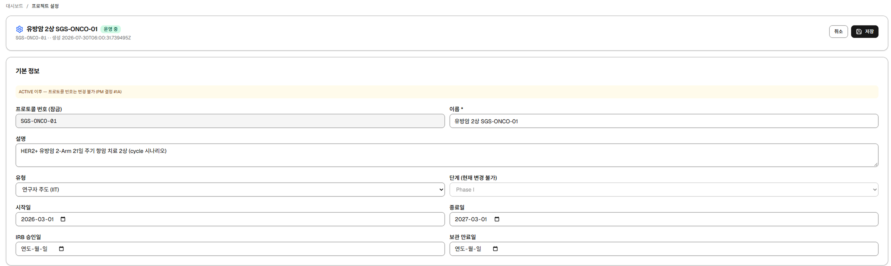
名前 * — 表示される名前を修正します。
説明 — 研究の概要を修正します。
種別 — 研究種別を変更します。運用中でも変更できます。
開始日 — 実際の研究開始日です。
終了日 — 実際の研究終了日です。
IRB承認日 — 審査委員会の承認日です。作成画面にはなく、ここでのみ入力します。
保管期限日 — データの保管期限です。作成画面の保管ポリシーとは別に、ここで日付を直接入力しないと記録されません(1.2 注意事項参照)。
保存 — 修正内容を反映します。隣のキャンセルを選ぶと、変更を破棄して参照状態に戻ります。
パスは編集中もそのまま維持されます。編集は同じ画面の中で行われます。
運用中以降はプロトコル番号を変更できないという案内が、カードの見出しに表示されます。
プロトコル番号 (ロック) — ラベルに「(ロック)」が付き、背景がグレーで、修正できません。設定中・テスト段階ではロックされません。
段階 (現在変更不可) — 選択できない状態で表示されます。研究の段階は、現在の画面では設定できません。
注意事項
必須確認 データ破損 · フォーム完了不可
- • 保存しようとしている間に別のユーザーが同じプロジェクトを修正していた場合、保存は拒否され、最新の内容が再度読み込まれます。このとき入力した値は保持されないため、案内文を確認してから最初から修正し直してください。
状態変更
- 3.1画面構成 (設定中 → テスト)
- 3.2テスト → 運用中 移行の選択
- 3.3テストデータ削除の確認
- 3.4運用移行の確認
- 3.5運用中 → 終了 移行の検証
- 3.6終了の確認 · データ編集ブロックへの同意
- 3.7電子署名の実行
3.1画面構成 (設定中 → テスト)
概要
プロジェクトの状態を次の段階へ進めたり、戻したりする画面です。どの移行でも現在の状態の確認 → 移行先の選択 → 理由の入力 → 実行の順番は同じです。移行の種類によっては、実行後に確認ダイアログがさらに表示されます。設定中からテストへ進める移行だけは、確認ダイアログがない唯一の移行です。
画面説明
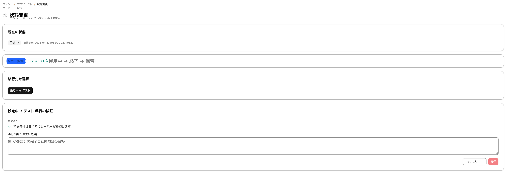
移行先の選択 — 現在の状態から移動できる状態だけがボタンで表示されます。選んだボタンは黒く表示され、その下に移行の検証カードが続きます。
移行理由 * (監査証跡用) — 必須入力です。監査証跡に残る記録になるため、「例: CRF設計完了および内部検証通過」のように、判断の根拠を書いてください。
実行 — 理由を入力するまでは薄く表示され、選択できません。設定中 → テストは確認ダイアログなしですぐに実行され、終わるとプロジェクト設定画面に戻ります。
パスはダッシュボード / プロジェクト設定 / 状態変更です。この画面は左のメニューにはなく、プロジェクト設定の状態変更またはロール別ダッシュボードからのみ入ります。
現在の状態 — 現在の状態と、最後に変更された時刻です。
5段階のうち(現在)が青く、(対象)が緑で表示されます。
前提条件の欄には「前提条件は実行時にサーバーが検証します」の一行だけが表示されます。
注意事項
必須確認 データ破損 · フォーム完了不可
- • 前提条件の緑のチェックは「合格」を意味しません。条件をあらかじめ検査した結果ではなく、実行時に確認するという案内です。たとえば CRF フォームが1件もない場合、実行を押した後にようやく拒否されます。移行の前に必要な構成がそろっているかは、各画面で直接確認してください。
誤解しやすい動作
- • 状態変更の権限は、メタ編集の権限とは異なります。設定画面に状態変更ボタンが表示されていても、この画面でブロックされることがあり、逆にボタンが見えなくても権限がある場合があります。ブロックされた場合は、ワークスペース管理者にお問い合わせください。
3.2テスト → 運用中 移行の選択
概要
テストの状態では、設定中に戻すか、運用中へ進めることができます。どちらの移行も、テストデータを物理削除するため、選択すると警告バナーが一緒に表示され、実行後に確認ダイアログが続きます。
画面説明
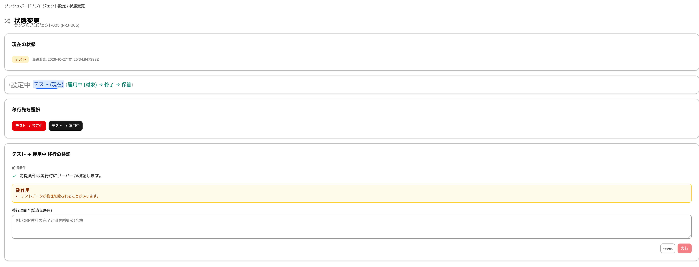
テスト → 設定中 — 構築段階に戻します。赤く表示されているのは、データが削除される移行であることを示します。
テスト → 運用中 — 実際の運用を開始します。選んだボタンは黒く変わります。
移行理由 * — 必須入力です。
実行 — 理由を入力すると選択できるようになります。選択してもすぐには移行されず、先にテストデータ削除の確認ダイアログが表示されます 3.3。
現在の状態はテストと表示されます。
移行先として選んだ状態が緑で表示され、どこへ移るかを確認できます。
前提条件は、ここでも「実行時にサーバーが検証します」の一行です (3.1 注意事項参照)。
副作用 バナー — 「テストデータが物理削除される場合があります」と表示されます。臨床上の有害事象ではなく、この移行に伴う影響を示す画面の文言です。
注意事項
必須確認 データ破損 · フォーム完了不可
- • テスト → 設定中 と テスト → 運用中 は、どちらもテストデータを全件削除します。被験者・入力データ・来院・Query がすべて削除され、被験者の連番も0にリセットされます。テスト結果を残す必要がある場合は、移行の前にデータのエクスポートで抽出しておいてください。
3.3テストデータ削除の確認
概要
テストの状態で実行を選ぶと、最初に開くダイアログです。差し戻しも運用への切り替えも、このダイアログを経由し、ここで続行するとテストデータが実際に削除されます。
画面説明
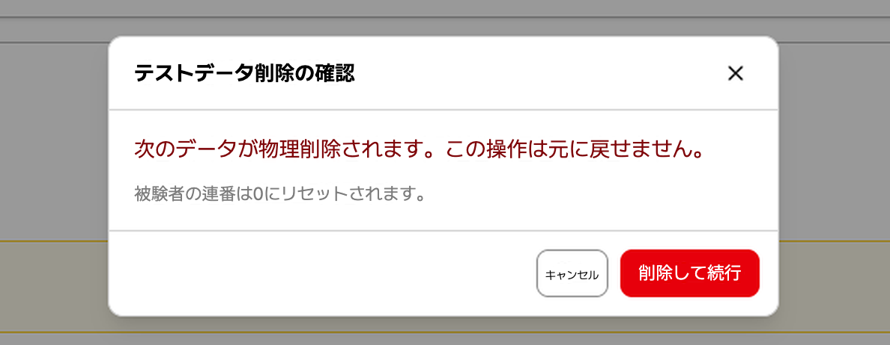
削除して続行 — 削除に同意して次の段階へ進みます。差し戻し(テスト → 設定中)は、この選択で移行が実行されます。運用への切り替えは、確認ダイアログがもう一度表示されます 3.4。
キャンセル — ダイアログを閉じて状態変更画面に戻ります。入力した理由は保持されます。
ダイアログのタイトルはテストデータ削除の確認です。
「次のデータが物理削除されます。この操作は元に戻せません。」— 復旧の経路がないことを意味します。
「被験者の連番は0にリセットされます。」— 移行後、はじめて登録する被験者は1番から始まります。
注意事項
必須確認 データ破損 · フォーム完了不可
- • 削除される件数はこのダイアログに表示されません。文言は「次のデータが」で始まりますが、実際の一覧は続きません。どのデータがどれだけ削除されるかは、移行の前に被験者一覧とQuery一覧で直接確認してください。
3.4運用移行の確認
概要
運用への切り替えでは、確認を2回受けます。前の画面がデータ削除への確認であるのに対し、この画面は運用の開始そのものへの確認です。ここで切り替えると、元に戻すことはできません。
画面説明
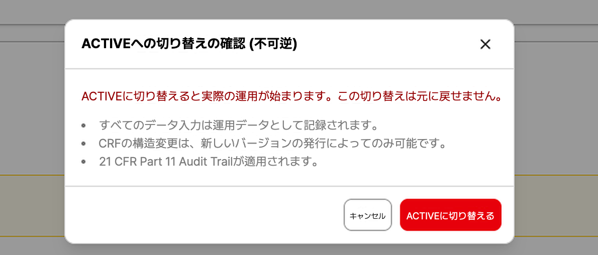
ACTIVEに切り替える — 運用を開始します。この選択と同時にテストデータの削除と状態の移行が一緒に実行され、終わるとプロジェクト設定画面に戻ります。
キャンセル — ダイアログを閉じます。前の画面で同意していても、ここでキャンセルすると何も実行されません。
ダイアログのタイトルに(不可逆)と明記されています。
「ACTIVE に切り替えると実際の運用が始まります。この切り替えは元に戻せません。」
切り替え後に変わる3点が案内されます — すべての入力が運用データとして記録されること、CRF構造は新しいバージョンの発行によってのみ変更できること、21 CFR Part 11 の監査証跡が適用されること。
注意事項
必須確認 データ破損 · フォーム完了不可
- • 運用中に切り替えた後は、設定中・テストに戻すことはできません。CRF構造を変えるには既存フォームを修正する代わりに新しいバージョンを発行する必要があるため、切り替えの前にフォーム設計・来院定義・参加施設・権限割り当てがすべて終わっているか確認してください。
3.5運用中 → 終了 移行の検証
概要
運用中のプロジェクトを終了します。終了は他の移行と違い電子署名が必要です。確認ダイアログで同意したうえで、電子署名まで完了して初めて実際に実行されます。
画面説明
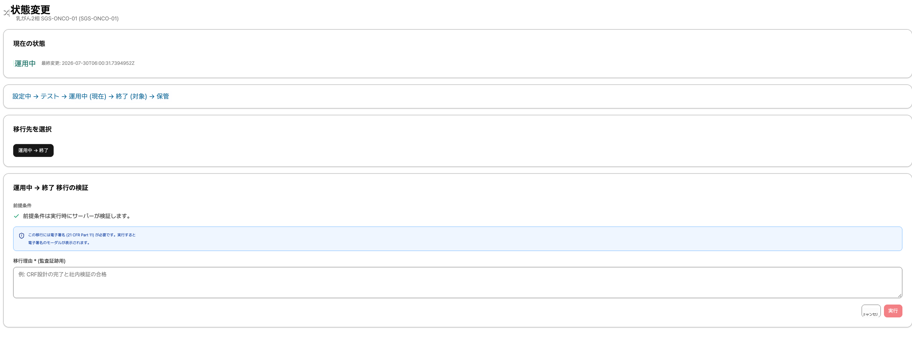
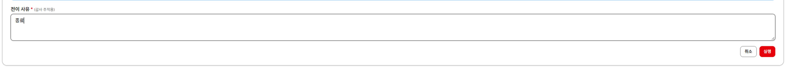
運用中 → 終了 — 終了の移行を選択します。終了後は終了 → 保管へ続けられ、システム管理者にはプロジェクト再開が追加で提供されます(下の注意事項参照)。
移行理由 * — 必須入力です。終了理由は、監査証跡と電子署名の記録に一緒に残ります。
理由を入力すると実行が選択可能な状態に変わります。
実行 — 選択すると移行はすぐには行われず、先にプロジェクト終了の確認ダイアログが表示されます 3.6。
現在の状態は運用中です。
移行先の終了が緑で表示されます。
前提条件は、ここでも一行の案内です (3.1 注意事項参照)。
青いバナー — 「この移行には電子署名(21 CFR Part 11)が必要です。実行時に電子署名モーダルが表示されます。」
注意事項
誤解しやすい動作
- • 終了には電子署名パスワードが必要です。ログインパスワードとは別のパスワードのため、設定していない場合は、先にマイアカウント画面で設定してから終了を進めてください。
- • 終了は最終状態ではありません。終了したプロジェクトの状態変更画面には、システム管理者にだけプロジェクト再開(終了 → 運用中)の領域が表示されます。再開には、実施者とは別の責任研究者(PI)の承認が必要で(本人のIDは使用できません)、再開理由も一緒に入力します。再開すると、終了時に適用された完全ロックが解除されます。
3.6終了の確認 · データ編集ブロックへの同意
概要
終了によって何が変わるかを知らせ、同意を得る画面です。終了するとプロジェクト全体にデータ編集ブロックがかかり、下位の参加施設も一緒に終了するため、同意のチェックなしには次へ進めません。
画面説明
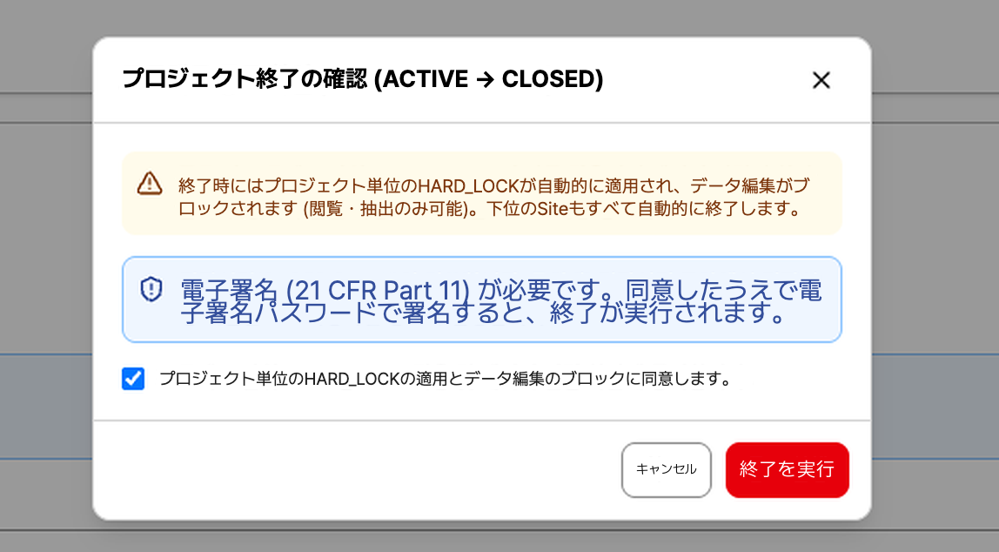
同意チェック — 「プロジェクト単位の HARD_LOCK を適用し、データ編集をブロックすることに同意します。」を選択する必要があります。チェックするまでは終了の実行が薄く表示されます。
終了を実行 — ダイアログを閉じて電子署名ダイアログへ進みます。この選択だけではまだ終了しません 3.7。
ダイアログのタイトルには、どの移行かも一緒に表示されます — プロジェクト終了の確認 (ACTIVE → CLOSED)。
黄色のバナー — 終了するとプロジェクト全体に完全ロックが自動的に適用され、データ編集がブロックされて、読み取りと抽出だけが可能になります。下位の参加施設もすべて自動的に終了します。
青いバナー — 同意した後、電子署名ダイアログで電子署名パスワードによる署名を行わないと終了が実行されない、という案内です。
キャンセル — ダイアログを閉じます。終了は実行されず、入力した理由は保持されます。
注意事項
必須確認 データ破損 · フォーム完了不可
- • 終了すると下位の参加施設もすべて一緒に終了し、データ編集がブロックされます。未処理のQueryや署名していないデータが残っていると、終了が拒否される場合があるため、移行の前にQuery一覧とLockの状況を先に整理してください。
3.7電子署名の実行
概要
21 CFR Part 11 に基づく電子署名を実行します。署名が成功して初めて終了が実際に実行され、署名記録は修正や削除ができない形で残ります。
画面説明
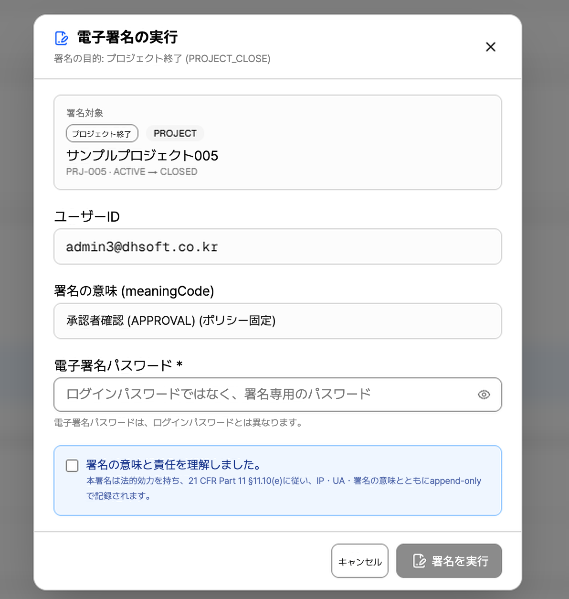
電子署名パスワード * — ログインパスワードではなく、署名専用のパスワードを入力します。右の目のアイコンを選ぶと、入力した値を確認できます。
署名の意味と責任を理解しました。 — チェックしないと署名を実行できません。
署名を実行 — パスワードと同意の両方がそろうと選択できます。署名が成功すると終了が実行され、プロジェクト設定画面に戻ります。
署名の目的 — 何に署名するのかが表示されます。終了の流れでは、プロジェクトの終結です。
署名対象 — プロジェクト名・プロトコル番号とともに、運用中 → 終了の移行が明記されます。別のプロジェクトではないか、ここで確認してください。
ユーザーID — 今ログインしているアカウントが表示され、変更はできません。
署名の意味 — 承認者の確認に固定されます。プロジェクトの署名ポリシーで1つだけ許可されているため、「(ポリシー固定)」と表示されます。
入力欄の下に「電子署名パスワードは、ログインパスワードとは異なります。」と案内されます。
キャンセル — 署名せずにダイアログを閉じます。終了は実行されません。
注意事項
必須確認 データ破損 · フォーム完了不可
- • 電子署名パスワードを5回間違えると、署名がロックされます。ロックされた場合は、再入力では解除されず管理者による解除が必要になるため、間違えた回数の案内が表示されたら、それ以上試さずにパスワードを確認してください。